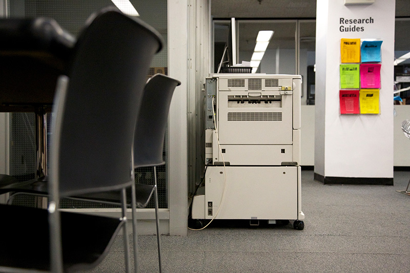
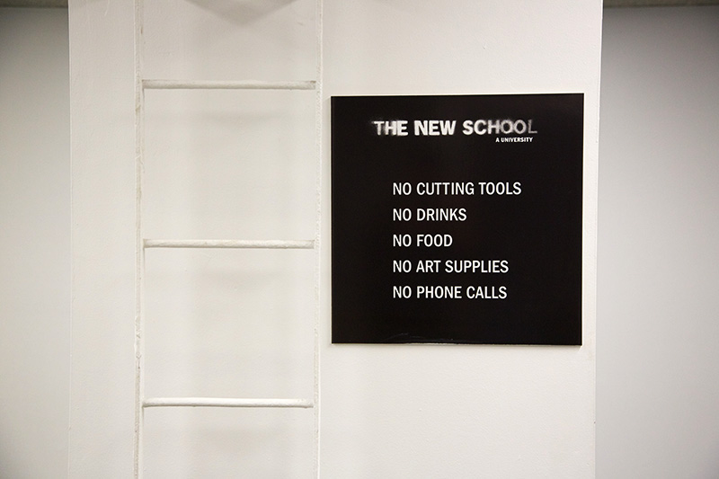

This study area
has four desks and is located in between the
stacks,
the
research station
and the
entrance.
Proximity to these high traffic areas can be bothersome, especially as there is a
printer1
nearby. There are 16 spaces available, however there are usually no more than 2 people per desk or half of the chairs in use. The
library's rules2
are posted on a column beside the desks.
1
There are three printers in the library. One in the quiet study area, a second by the research stations and a third colour photocopier by the periodicals.
2
No cutting tools. No drinks. No food. No art supplies. No phone calls.